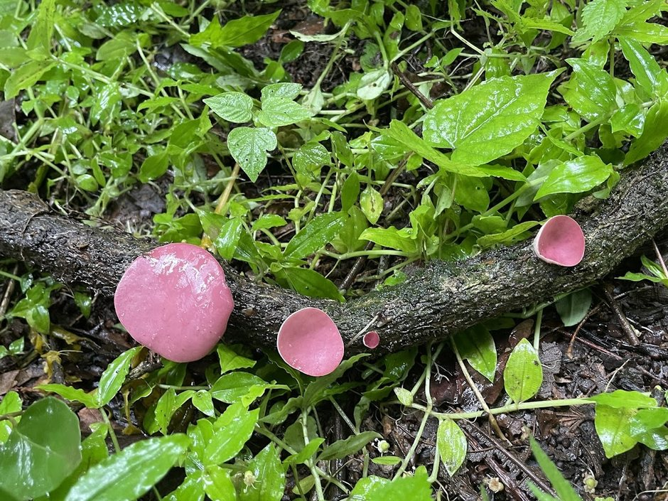
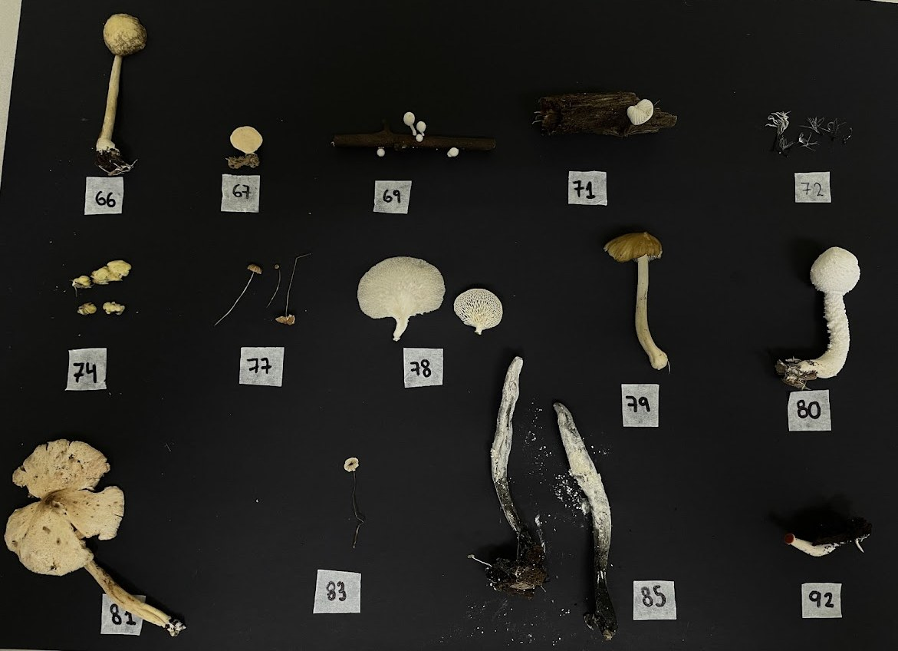

Diversidad fúngica de los bosques protectores Prosperina y Cerro Blanco — un inventario de macrohongos en un ecosistema poco documentado y fuertemente amenazado.
El proyecto
El bosque seco tropical es uno de los ecosistemas más amenazados del Ecuador occidental, y su componente fúngico permanece casi sin documentar. Este catálogo registra los macrohongos de dos remanentes de bosque seco en Guayaquil, integrando descripción morfológica en campo, cultivo in vitro, criopreservación de cepas y secuenciación de la región ITS.
De los 283 especímenes recolectados se seleccionaron 100 especies representativas, priorizando los registros con mejor documentación fotográfica y de caracteres morfológicos. El mapa interactivo permite ubicar cada hallazgo sobre imagen satelital con su coordenada real.

Phillipsia domingensis sobre rama caída · Bosque Protector Cerro Blanco
La data
283
especímenes recolectados
Hygrocybe miniata
41 puntos georreferenciados sobre 22 de las 24 especies del catálogo.
Cruce con la base de campoCoordenadas en grados, minutos y segundos
227
registros con coordenadas
19
salidas de campo · ene–may 2026
Hexagonia hydnoides
158 de los 283 especímenes siguen sin identificación a nivel de especie.
56 % de la colecciónPendiente de secuenciación ITS
24
fichas redactadas
Cyathus striatus
9
sitios de muestreo
Trogia cantharelloides
2
bosques protectores
Áreas de estudio
Bosque y Vegetación Protector Prosperina
264,86 ha · campus ESPOL · declarado 1994
Bosque Protector Cerro Blanco
6.078 ha · Cordillera Chongón-Colonche · Fundación ProBosque
Rango altitudinal
20 – 507 m s.n.m.
Precipitación media anual
500 – 1.135 mm según el sitio
Metodología
Muestreo oportunista delimitado por zonas, con registro fotográfico y georreferenciación de cada ejemplar. Los caracteres que se alteran con la manipulación —color, textura y dimensiones de píleo, estípite e himenio— se midieron in situ, junto con sustrato, altitud, temperatura y humedad.
En laboratorio se sembraron fragmentos en agar papa dextrosa con antibióticos, incubados a 28 °C. Las cepas se conservaron por duplicado: micelio en crioviales con agua destilada a −20 °C y cuerpo fructífero a −80 °C para preservación de material genético. La identificación morfológica se complementó con amplificación de la región ITS.

Especímenes numerados de una salida, dispuestos para descripción morfológica antes de la siembra · Laboratorio de Micotectura, CIBE
Los derechos de propiedad intelectual de esta obra y de los datos que la sustentan pertenecen al Centro de Investigaciones Biotecnológicas del Ecuador (CIBE) — ESPOL.
Centro de Investigaciones Biotecnológicas del Ecuador (CIBE) Laboratorio de Micotectura · ESPOL
Desarrollo del catálogo y del mapa
Carlos Saavedra
Nota sobre los datos
Las coordenadas de campo están registradas a segundos enteros, lo que equivale a una precisión aproximada de 30 metros. Varios sitios de muestreo son recorridos de más de un kilómetro, por lo que el punto en el mapa representa el centroide de las colectas y no una ubicación puntual.
Diseño y programación del sitio, e implementación del mapa interactivo